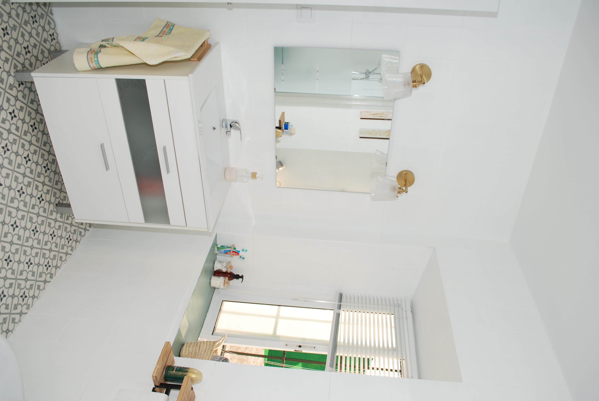
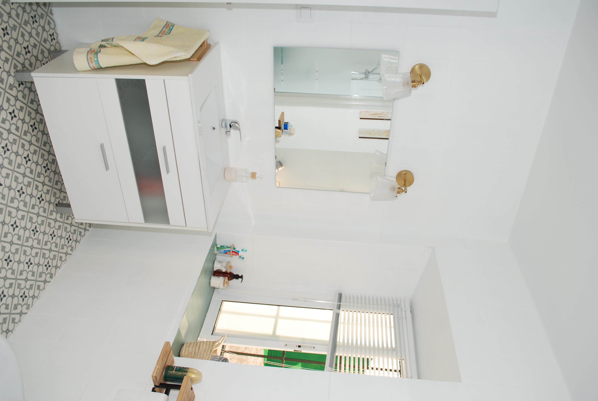

La Casa de Antonina
Un refugio con alma en Castilblanco de los ArroyosEn el corazón de Castilblanco de los Arroyos se encuentra La Casa de Antonina, la casa de sus abuelos, construida allá por los años 40. Fue testigo del paso de generaciones de la familia Ortega-Palomo y de la vida cotidiana del pueblo.
La Casa
La casa tiene 3 habitaciones, 2 baños, cocina equipada, salón con chimenea y un jardín privado. Tiene capacidad para 6 personas. Equipamiento: wifi, ropa de cama, cocina completa y patio exterior.
- 3 habitaciones dobles
- 2 baños completos
- Cocina y salón con chimenea
- Jardín y barbacoa
Galería
 


Entorno
Castilblanco de los Arroyos es un pintoresco pueblo sevillano que combina tranquilidad, historia y tradición. Sus calles empedradas, plazas acogedoras y casas blancas invitan a pasear y descubrir rincones llenos de siglos de historia, que evocan la época medieval y el paso de viajeros y comerciantes.
Se dice que estas tierras estuvieron vinculadas a antiguos caminos que incluso inspiraron relatos de la época de Cervantes, donde la vida rural y las pequeñas historias cotidianas llenaban de color el paisaje.
Rodeado de naturaleza, sus alrededores ofrecen rutas de senderismo, miradores, ríos y zonas de merenderos. Paseos a caballo, excursiones en bicicleta y la riqueza de la flora y fauna local completan la experiencia.
En los alrededores, el visitante puede descubrir también los encantos del Parque Natural de la Sierra Norte, con dehesas, encinares y antiguos molinos junto a los arroyos que dan nombre al pueblo. Cada estación transforma el paisaje, ofreciendo una experiencia distinta: el verdor de la primavera, el frescor de los riachuelos en verano, los tonos dorados del otoño y el sosiego invernal junto al fuego. Castilblanco no es solo un lugar para visitar, sino para sentir el ritmo pausado de la vida rural andaluza.
Reservas
Contacto
Para más información y reservas puedes escribirnos o enviarnos un mensaje por WhatsApp.
Email: casaantonina@pippeces.com
Dirección: Castilblanco de los Arroyos (Sevilla)